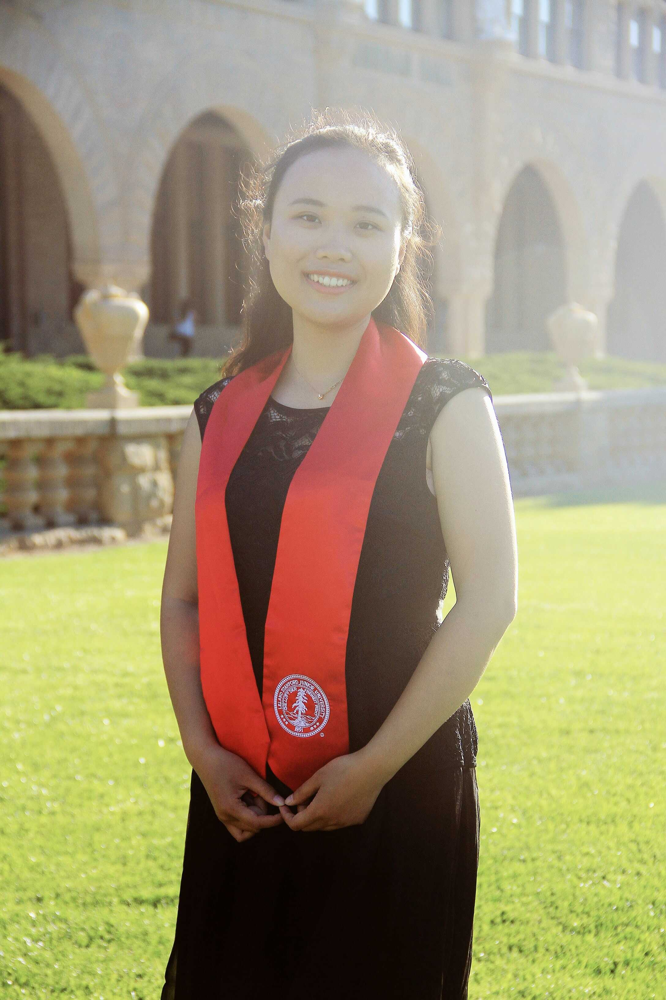

|
Tianmei Wang
|
 |
Ph.D. candidate, Soil Biogeochemistry
367 Panama St.
Stanford, CA 94305, USA
Email: tmwang [at] stanford [dot] edu
[Google Scholar][Curriculem Vitae]
I am a Ph.D. candidate in Earth System Science at Stanford Univetsity advised by Professor Scott Fendorf. My research focuses on quantifying the impact of climate change on the fate of heavy metal(loid)s in soils and on crop quality and quantity. I use a combination of experimental/ field studies together with remote sensing imagery and statistical models.
|
News
Research Interest
Education
Ph.D. in Earth System Science, Stanford University, 2023 (expected) (advisor: Prof. Scott Fendorf)
M.S. in Civil and Environmental Engineering, Stanford University, 2017
B.S.E. in Environmental Science and Engineering, Shanghai Jiao Tong University, 2015
|